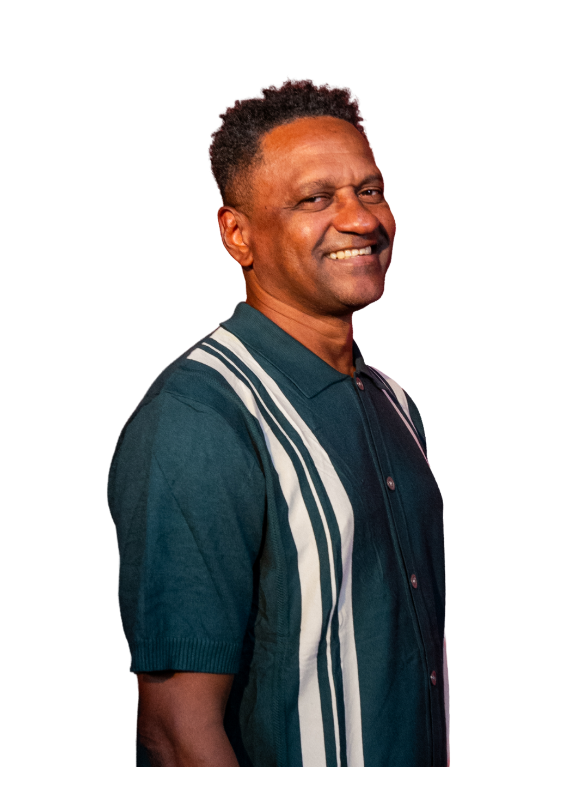
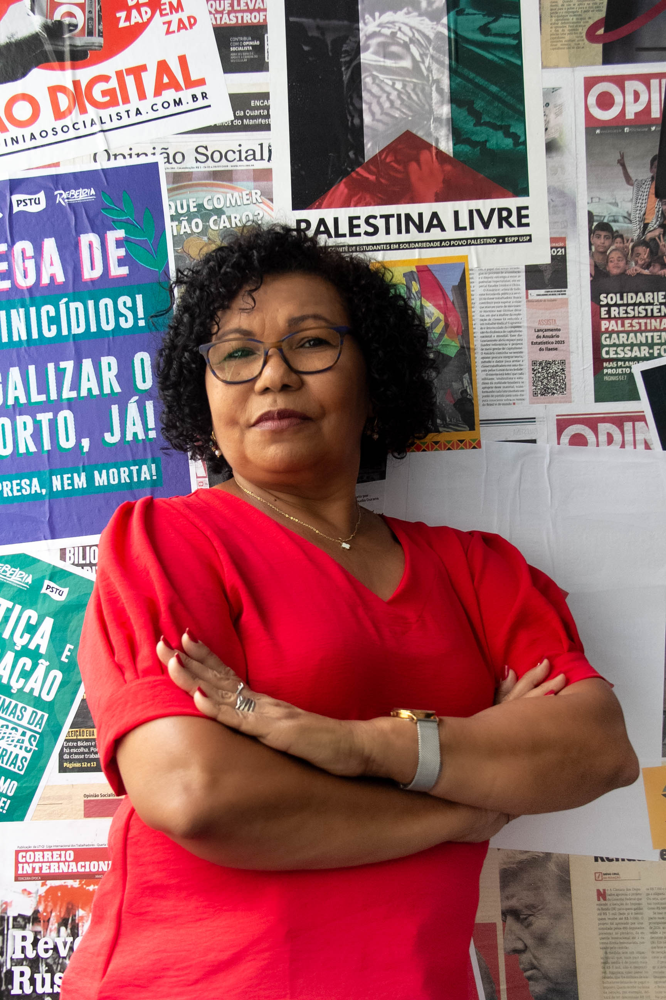

Jornada de trabalho 4x3, de 36h semanais, sem redução de salário
Criar postos de trabalho, dividindo o trabalho socialmente necessário entre todas as pessoas aptas a trabalhar. Quem defende a 6x1 é herdeiro ou playboy!
Eu sou Mandi. Das greves e manifestações. Podcasts e debates. Velejei com a Global Sumud Flotilha rumo à Gaza. Sou feminista marxista e LGBTQIAPN+.
Combato a extrema-direita e os redpill. Enfrento a esquerda capitalista. Defendo a revolução socialista brasileira.
Venha comigo construir uma candidatura revolucionária para defender a classe trabalhadora e mudar o Brasil!

Conheça as principais propostas.
Criar postos de trabalho, dividindo o trabalho socialmente necessário entre todas as pessoas aptas a trabalhar. Quem defende a 6x1 é herdeiro ou playboy!
Texto da proposta.
Texto da proposta.
Texto da proposta.
Texto da proposta.
Texto da proposta.
Texto da proposta.
Texto da proposta.
Texto da proposta.
Texto da proposta.
Criar postos de trabalho, dividindo o trabalho socialmente necessário entre todas as pessoas aptas a trabalhar. Quem defende a 6x1 é herdeiro ou playboy!
Texto da proposta.
Texto da proposta.
Texto da proposta.
Texto da proposta.
Texto da proposta.
Texto da proposta.
Texto da proposta.
Texto da proposta.
Texto da proposta.
Para derrotar o bolsonarismo e superar a conciliação de classes do PT que mantém a submissão ao imperialismo e segue cada vez mais aliado ao sistema contra os interesses dos trabalhadores, estudantes e setores oprimidos
Para construir uma base forte em torno de um projeto político socialista para o Brasil, comprometido com a união da classe trabalhadora da tomada de consciência à tomada do poder.
Para ampliar a voz e o alcance dessa luta que iniciei há mais de uma década. Liderei o movimento estudantil, organizei e participei de greves e ocupações. Recentemente, fui sequestrada pelo exército de Israel quando tentava levar ajuda humanitária a Gaza. Sigo combatendo e derrotando a extrema-direita nos debates e redes sociais.
Eles têm dinheiro, estrutura e poder. Mas nós temos uma coisa que poucos tem: organização e militância ativa das lutas. E isso faz toda diferença para uma campanha que é construída por um ideal. Seja parte da Tropa da Mandi.
Meu partido financiamento dos empresários, bilionários, BETs e big techs que financiam o PT, PL e tantos outros partidos do sistema. Esse é o preço para defendermos o que acreditamos. E se você também acha importante que uma voz assim vá mais longe, a sua contribuição faz a diferença. Doe agora. Financie a luta contra o sistema.
Apoiar esta campanha é investir em mudanças reais. Juntos, podemos transformar ideias em ações e construir um futuro melhor para todos.
“Acredito em uma política feita com as pessoas, para as pessoas e pelas pessoas. Vamos juntos nessa caminhada!”
Seu apoio ajuda a ampliar nossa voz, levar nossas propostas adiante e fortalecer a participação popular.
Todos os candidatos do PSTU que estão comigo nessa luta
Texto da proposta.

Texto da proposta.

Texto da proposta.

Texto da proposta.
Texto da proposta.
Texto da proposta.
.
Conheça os principais marcos da minha trajetória na luta por uma sociedade mais justa.
Cada passo dessa jornada reforça nosso compromisso com um futuro melhor para todos.
Conheça os principais marcos da minha trajetória na luta por uma sociedade mais justa e participativa.
O acontecimento que mudou minha vida foi Junho de 2013. Os milhões nas ruas do país. Ter visto tanta gente unida na rua me fez entender que somos maioria. Que quando nos unimos temos força. Que é possível fazer uma revolução. Primeira manifestação de rua da vida, a Marcha das Vadias.
Comecei a militar. Eu morava em Curitiba. O pontapé foi a luta contra a destruição dos serviços públicos levada adiante pelo governador Beto Richa, do PSDB. E a privatização dos Hospitais Universitários, levada adiante pela Dilma, que era presidente.
Me torno oficialmente militante do PSTU. A minha escola de política nos anos seguintes foi o movimento estudantil. Em 2015, greve nacional da educação contra os cortes de bilhões da Dilma.
Ocupação de mais de 1000 escolas no país, pelo Fora Temer e contra a reforma do ensino médio. Marcha para Brasília contra a aprovação do Novo Ensino Médio. Lutas pelo Fora Cunha.
Foi o ano das greves gerais e da Greve Internacional de Mulheres, no 8 de março.
Ele não. Fui às ruas contra Bolsonaro e ajudei a construir a mobilização que dizia que ele não seria uma alternativa para o nosso país.
Tsunami da educação, contra Bolsonaro e o projeto “Future-se” que queria privatizar as universidades.
Me mudei para São Paulo. De 2021 até hoje, estive à frente do Centro Acadêmico de Letras na USP. Travamos muitas lutas durante a pandemia. Em São Paulo, tive a tarefa de formar uma geração de jovens socialistas, no Rebeldia.
Nessa greve, fui uma das 11 estudantes que fez parte da Comissão de Negociação com a Reitoria. A luta arrancou a contratação de mais de mil professores.
E depois disso nunca mais parei. Já enfrentei algumas das principais figuras redpill e da direita jovem. Os debates e o conteúdo do Instagram e do meu canal do YouTube são a forma que encontrei para divulgar as ideias socialistas nas redes.
Naveguei com a Global Sumud Flotilha rumo à Gaza, em defesa do povo palestino. Fui sequestrada em águas internacionais pelas forças militares israelenses. Uso minha voz para projetar a luta por uma Palestina livre do rio ao mar.